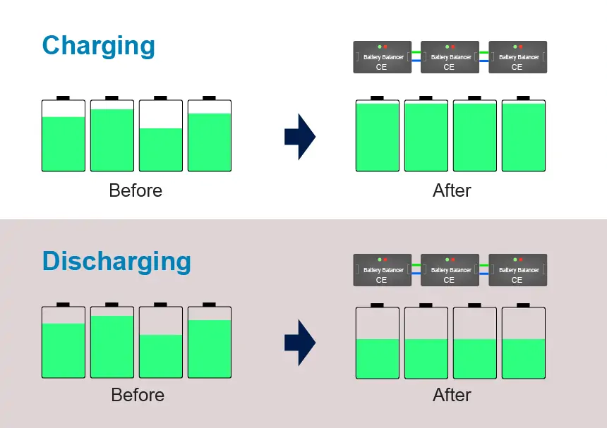
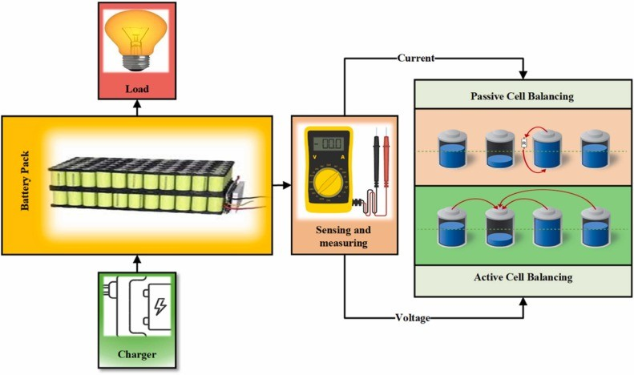
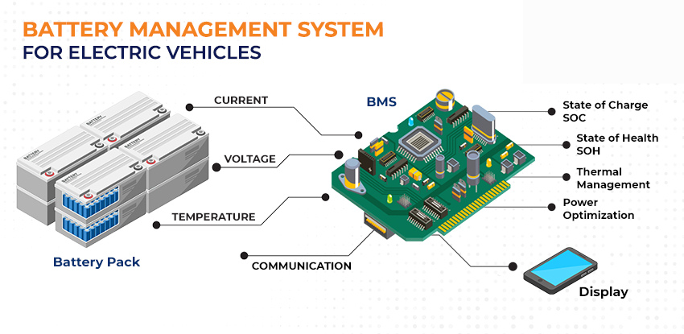
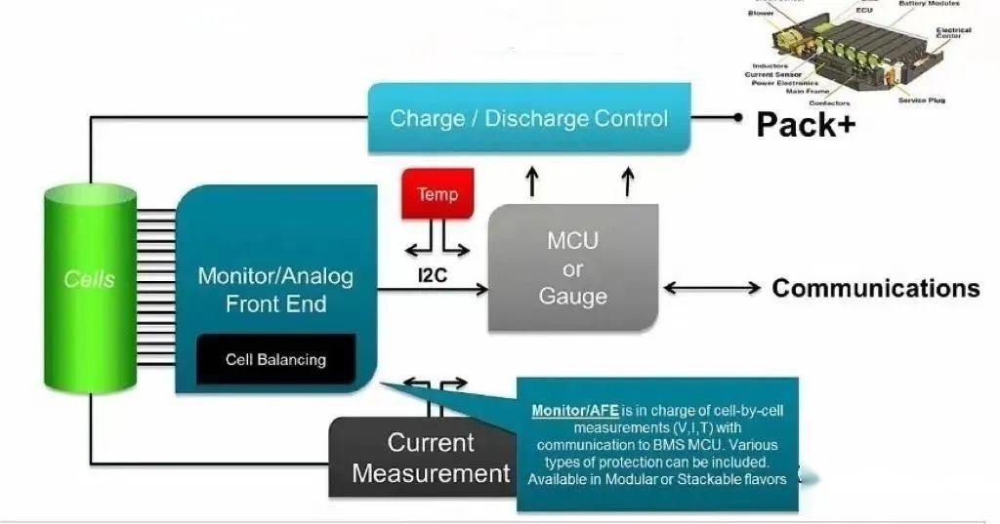
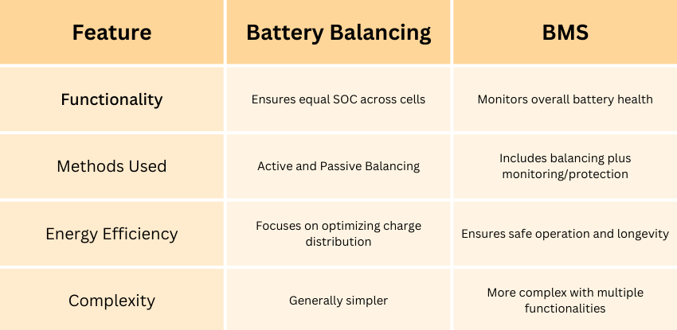

In the realm of battery technology, particularly with lithium-ion batteries, two crucial concepts often arise: Battery Balancing and Battery Management Systems (BMS). While these terms are sometimes used interchangeably, they serve distinct functions that are vital for the performance and longevity of battery packs. Let’s break it down.
Understanding Battery Balancing
Battery balancing is the process of ensuring that all cells within a battery pack maintain an equal state of charge (SoC). This is essential for maximizing the use of the battery capacity and enhancing the lifespan of the cells. When cells within a pack are imbalanced, some may become overcharged and others undercharged, leading to potential damage. In modern applications, such as electric vehicles and renewable energy storage systems, the importance of battery balancing cannot be overstated, as it directly impacts both performance and safety.

Components of Battery Balancing
Several key components make up battery balancing systems. The primary method involves active and passive balancing techniques.
- Active balancing redistributes energy from higher-charged cells to lower-charged ones, which is efficient and maintains overall capacity. This method can be particularly beneficial in applications where battery life and efficiency are paramount, such as in aerospace or high-performance electric vehicles.
- On the other hand, Passive balancing discharges the more charged cells to align their voltage with lower charged cells, which is simpler but less efficient. Both methods can integrate with a battery management system (BMS) to achieve more effective outcomes.

The primary goal of battery balancing is to maximize the available capacity and service life of a battery pack, ensuring that no single cell is overcharged or excessively discharged.
Why Battery Balancing is a Part of Battery Management
The BMS plays a crucial role in monitoring cell voltages, temperatures, and overall health, ensuring that the balancing process is executed optimally and safely. Advanced BMS technologies can even employ machine learning algorithms to predict and adjust balancing needs in real time, further enhancing system performance.
Benefits and Limitations of Battery Balancing
One of the main benefits of battery balancing is enhanced battery lifespan. By ensuring uniform charge levels across cells, the degradation rate is significantly reduced. Furthermore, improved efficiency in energy use means that battery packs can deliver more power for longer durations. This is especially advantageous in applications such as electric vehicles, where maximizing range is a critical concern for users. Additionally, balanced battery packs can maintain their performance over a wider range of operating conditions, making them more versatile and reliable.
However, battery balancing is not without its limitations. Implementing an effective balancing strategy can increase system complexity and costs. Certain methods may require additional components that could lead to a larger system footprint and increased maintenance requirements. Moreover, the choice between active and passive balancing can depend on specific application needs, with active systems often being more expensive but providing greater efficiency. As technology continues to evolve, ongoing research aims to address these challenges, seeking to develop more cost-effective and efficient balancing solutions that can be widely adopted across various industries.
Delving into Battery Management
A Battery Management System (BMS) is a more comprehensive system that oversees the entire operation of a battery pack. It not only manages cell balancing but also encompasses various functions such as:

- Monitoring: A BMS continuously tracks voltage, current, temperature, and SOC across all cells to ensure they operate within safe limits.
- Protection: It prevents overcharging, deep discharging, and thermal runaway, which can lead to catastrophic failures.
- Communication: A BMS often communicates with other systems to relay information about battery health and status, which is crucial for applications like electric vehicles and renewable energy storage.
While a BMS includes balancing as one of its functions, it also integrates additional features that enhance safety and efficiency. For instance, advanced BMS designs may implement sophisticated algorithms for both active and passive balancing techniques, adapting to real-time conditions within the battery pack.
Importance of Battery Management Systems
Effective battery management is crucial for several reasons, primarily safety. Batteries can be sensitive to overcharging, overheating, and other adverse conditions. A well-designed BMS will monitor these parameters and keep the battery within safe operational limits. This is particularly important in high-stakes environments such as electric vehicles or renewable energy systems, where battery failure can have dire consequences.

A BMS safeguards against:
- Thermal runaway
- Battery degradation
- Unexpected failures, ensuring system reliability and user safety.
Key Differences

Choosing Between Battery Balancing and Management
When selecting between battery balancing and management, it is essential to consider the specific requirements of the application. For enhanced safety and performance, a robust battery management system is crucial, especially in applications requiring reliability, such as electric vehicle systems.
Conversely, in smaller battery systems where cost is a concern, basic balancing methods may suffice to maintain functionality without the overhead associated with comprehensive management systems.
The Impact of Emerging Technologies on Battery Systems
Emerging technologies such as solid-state batteries and graphene-based solutions hold the promise of transforming battery performance. These advancements are expected to address some of the limitations faced by traditional lithium-ion systems, including energy density, safety, and charging speeds.
As these technologies become commercially viable, they will shape the future landscape of battery balancing and management, requiring a reevaluation of current practices and systems to harness their full potential.
Conclusion
In conclusion, both battery balancing and battery management play integral roles in battery technology, each serving a unique purpose that contributes to the overall effectiveness and longevity of battery systems. Understanding these differences is essential for anyone involved in the design, management, or usage of battery technology in modern applications.